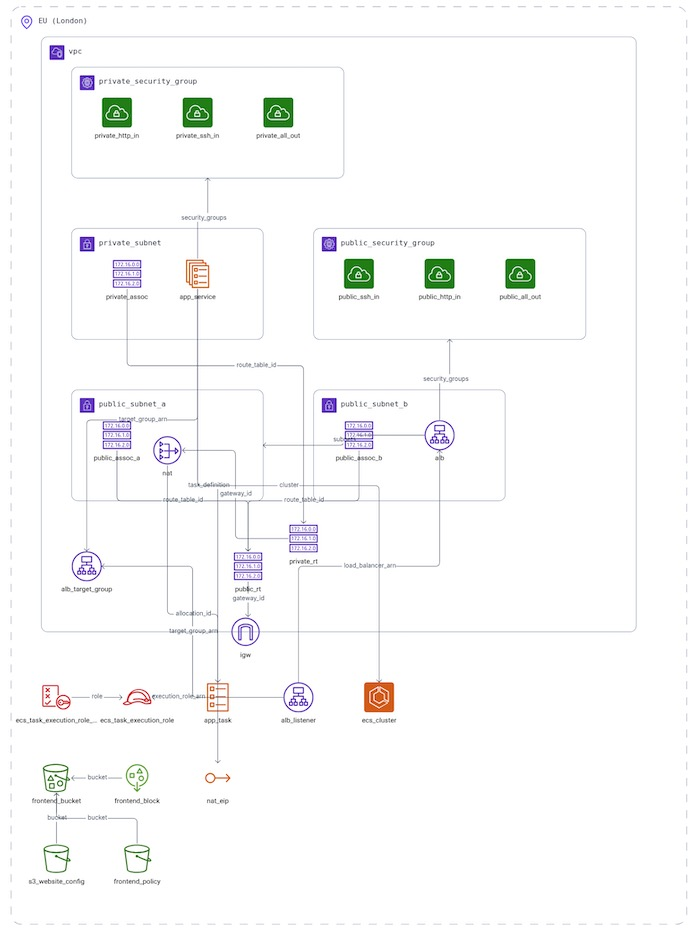
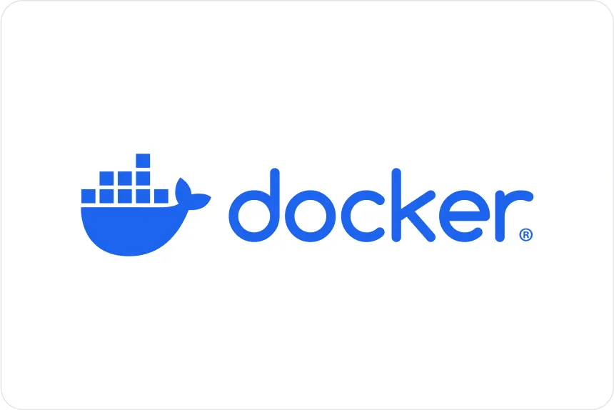
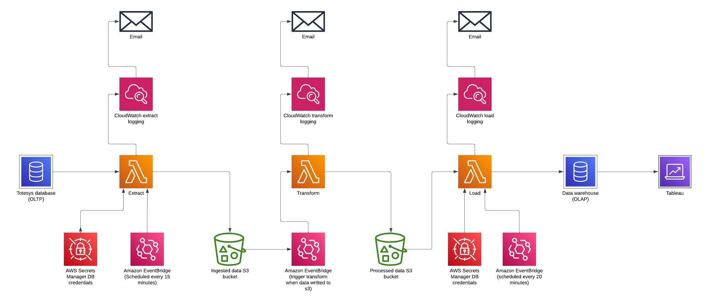

- Ten10
- Northcoders
Ten10 Jenkins Project repository
For my final project in Ten10's Platform Engineering stream, I deployed both the frontend and backend of a website. The backend used a multi-stage Docker build, and all necessary AWS infrastructure was provisioned with Terraform. I implemented a Jenkins pipeline that automated the entire deployment process, triggered by Git commits.
Tech Stack
Project Onyx ETL repository
For my final project of Northcoders' data engineering bootcamp, my small team created an ETL pipeline that extracted data from a Postgres OLTP database, stored it in AWS S3, processed it via Lambda functions, and loaded it into an OLAP Postgres DB. We monitored with Cloudwatch, used AWS Secrets Manager for credentials, and deployed with Terraform. Code was tested using Pytest via a GitHub Actions pipeline.
